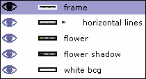
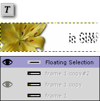
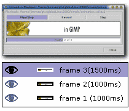
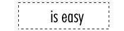
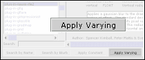
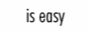
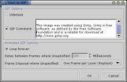

In this tutorial, you'll learn how to use GIMP's layers in a different manner. Unlike it's default composite function, using GIMP as an animation package requires you to think of every layer as of an animation frame. We'll discuss the two different frame disposal methods later on. For now let us think about every layer as of a separate frame.

We'll create a very simple web banner. Let's start with a new image 468x60 px. Use white as the background color. Create new transparent layer. Select the whole image with Ctrl+A and fill it with black (Ctrl+,). Shrink the selection by 1 px ( <image>Selection->shrink) and delete the selection with Ctrl+K. We created a 1 px frame around out banner.
Now it's time to put our logo or the main theme picture into the banner. I have prepared a masked-out flower you see on the picture on the left.
I just pasted the flower below the border frame, used alpha to selection, created an empty layer below it and filled the selection with black using Ctrl+,.
After that I blurred the shadow using Gaussian blur RLE and ofset it by 2px to bottom right. I couldn't resist adding the interlace effect using
<image>Filters->Render->Grid and a layer mask. In that layer mask i applied a b/w gradient,
so that the left of the flower is not interlaced.
This part of the tutorial is not the key element, so feel free to experiment. Once you're ready flatten the image using the
<image>Layers->Flatten Image.

Now we're ready for the actual animation work. We will be creating a banner consisting of, say three lines of text being animated. Each frame will consist of the flower image and accompanied by some text. I don't want to make this boring, so lets make it three frames. The first step will naturally be to copy our flattened image two times using the duplicate layer button in the layers window.
Then we'll use the standard text tool to put a small text note on every frame. After typing the text onto the frame, GIMP will create a floating selection, that you need to position right using the move tool and anchor using Ctrl+H. The positioning might be crucial for the final animation, so you can use the following trick to make the positioning a piece of cake. Before using the text tool, set the layer (frame) transparency to a lower value, so you could see the layer below it. That way you can position the newly created text acording to the text below (on the previous frame).

In every GIF animation you are allowed to specify the delay between frames. That way you can create a 12 second animation using only a few frames,
because the delay does not have to be constant. In GIMP you specify the delay as a layer comment. Just double-click the layer comment in the layers'
window and a delay in ms enclosed in brackets ().
To check if the timing is good, you can preview the animation using the <image>Filters->Animation->Animation Playback.
You can even drag the preview around your desktop.
  
In the last step, we'll use a very handy function for applying a filter to multiple layers. Before we do that, we need to create a new image out of the third frame.
In GIMP 1.1+ it's as simple as dragging the layer preview from the layers window to the toolbar. Now duplicate the image four times. With a rectangular select tool,
draw a selction around the text. Now we're ready to apply a gaussian blur filter on every layer using varying parameters. Use the
<image>Filters->Filter All Layers function and select plug-in-gauss-rle2 from the list and press the apply varying button.
The blur dialog pops up. Now we need to specify parameters for the lowest layer in the stack, ie. our first frame.
We want to blur the text away in time, so for the first frame, let's specify a lower value. We'll blur in horizontal direction only,
so let's make it v:0 h:2. After you click OK another dialog shows up. Here, choose continue and specify parameters for the last frame. We'll go for 20 px horizontal blur.
You can backup the progress, but for now we will make the filter apply on all layers inbetween by clicking on continue in the next dialog.
All we need to do now is to drag the layers back to the original image.

Now we only need to save our animation as GIF. Before we do that, let's optimize the animation using the
<image>Filters->Animation->Animation Optimize function.
This will create a new image using a different mode than what we have now. You can use two different modes for every frame of your animation.
You can either use the replace mode (default), which will replace the old frame with the new one. It's like taking the frame out before adding a new one.
The other is the combine method, in which the new frame is added to the previous frame. That way only changes need to be updated.
That's what animation optimize basically does. The file size gets tremendously smaller. Now we need to index the image using
<image>Image->Mode->Indexed function (Alt+I).
Try to use as little colors as possible and avoid dithering. Both number of colors and dithering tend to enlarge the filesize dramaticaly.
I used no color dithering and generated 32 color pallette. The file size of the banner is about 7kB. If you now save the image as GIF,
GIMP will ask whether it should save the image as an animation, which is exactly what we need. In the save as GIF dialog, you can specify the default delay
(in our example it will be used for the blured frames) and disposal method. You can use your WWW browser to check the animation, or you can use the animation
playback function in the animation section of the image menu.
The original tutorial can be found here.